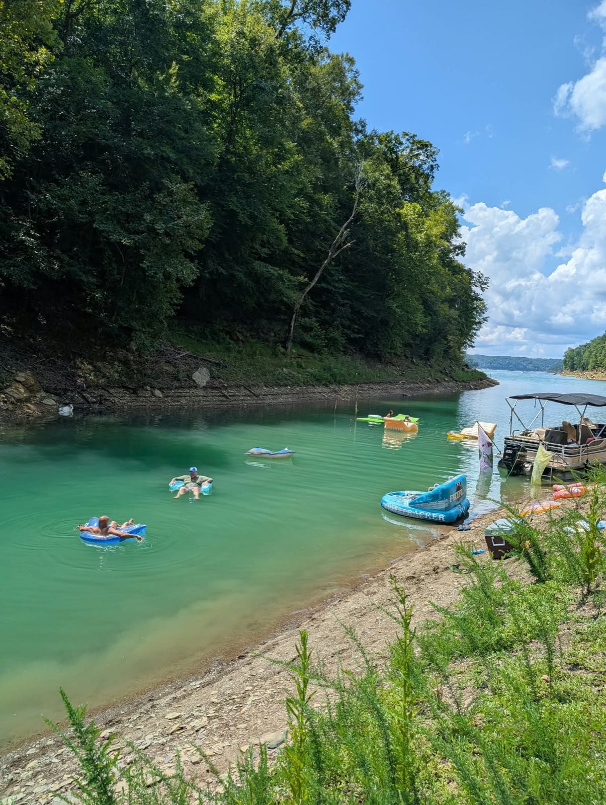

Days on the Water
Boats head out early and the cove fills up by afternoon — pontoons tied up at the shore, floats in the green water, and paddleboards ready to go. The stairs down to the swimming cove are privately owned and maintained, and neighbors are welcome to use them to get down to the water.